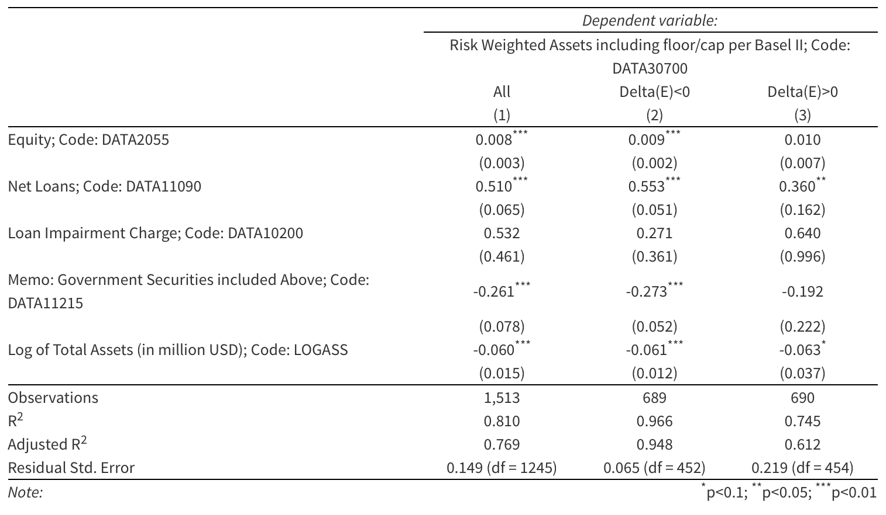

Anatomy of Bank Distress
Reporting Discretion and the Quality of Bank Regulatory Disclosure
By Janko Cizel / Edward Altman / Herbert Rijken
Introduction
- Reporting discretion:
Banks posses substantial discretion in their disclosure to investors and regulators...
- Basel II \(\Longrightarrow\) IRB
- Loan-loss provisioning
- Accounting for incurred losses
- Strategic use of discretion
Weak banks might have an incentive to use discretion to improve their reported performance.
- Blum (2008, JBF)
- Mariathasan (2014, JFI)
Intro (cont.)
- Implications of the strategic use of discretion:
- information content of bank disclosure \(\Downarrow\)
("signal-jamming")
- Excessive leverage
(RWCR less binding)
- information content of bank disclosure \(\Downarrow\)
This presentation
Part I:
Accounting Discretion and the Quality of Bank Disclosure.
Part II: LR vs RWCR
Evidence on the strategic reporting of Basel RW
Part III
Introduction of the RWCR Analytical Dashboard (jcizel87.shinyapps.io/RiskWeightMonitor/).
Part I
Reporting Discretion and the Quality of Bank Disclosure
On measuring the quality of bank disclosure...
Bank disclosure is informative to the extent that it can distinguish
between financially weak and healthy institutions.
$$P(\text{Distress}) = f(\text{Fundamentals})$$
- Fundamentals unobservable
- Proxied by bank disclosure (observable)
- Also observable: bank failure
(manifestation of bad fundamentals)
$$P(\text{Distress}) \stackrel{?}{=} f(\text{Disclosure})$$
Ability of bank disclosure to explain bank distress varies substantially across countries...

Can the variation in the observed classification performance be attributed to the banks' exercise of accounting discretion?
Testing the link between reporting discretion and the quality of bank disclosure...
Main Hypothesis
Lax disclosure rules and enforcement $$\rightarrow$$ information content of bank disclosure \(\downarrow\) $$\rightarrow$$ (classification performance of disclosure \(\downarrow\))
Measuring reporting discretion...
Barth, Caprio, and Levine (2013)
- About 50 measures related to domestic bank regulation/supervision
- 180 countries, 1999-2013
- Based on World Bank quadrennial surveys of national bank regulators
We focus at the set of measures on the strictness of disclosure laws, monitoring intensity by the regulators (requirements on audits, etc.)
regulatory index (R) \(\uparrow\) \(\rightarrow\) reporting discretion\(\downarrow\)
Test of the hypothesis
reporting discretion \(\uparrow\) \(\rightarrow\) info content \(\downarrow\)
Cross-sectional test
strictness of disclosure standards, R\(\uparrow\) $$\rightarrow$$
ability to predict distress in a cross-section of banks in country c
at time t\(\uparrow\)
\begin{align}
Pr(\text{Distressed}_{ict} = 1) & = \text{Logit}(\alpha_{ct} + x_{ict}'\theta
+
\epsilon_{ict})\\
& = \text{Logit}(\alpha_{ct} + x_{ict}*(\phi_1 + \phi_2 R_{ct}) + \epsilon_{ict})\\
& = \text{Logit}(\alpha_{ct} + \phi_1*x_{ict} + \phi_2*R_{ct}*x_{ict} +
\epsilon_{ict})
\end{align}
Test: $$|\phi_1 + \phi_2|>|\phi_1|$$

Time-series test
strictness of disclosure standards, R\(\uparrow\) $$\rightarrow$$
quality of a failed bank's signal of its impending distress prior
to failure\(\uparrow\)
\begin{align}
Pr(\text{Distressed}_{ict} = 1) & = \text{Logit}(\alpha_{i} + x_{ict}'\theta
+
\epsilon_{ict})\\
& = \text{Logit}(\alpha_{i} + x_{ict}*(\phi_1 + \phi_2 R_{ct}) + \epsilon_{ict})\\
& = \text{Logit}(\alpha_{i} + \phi_1*x_{ict} + \phi_2*R_{ct}*x_{ict} +
\epsilon_{ict})
\end{align}
Test: $$|\phi_1 + \phi_2|>|\phi_1|$$

Conclusions
Evidence consistent with the idea that reporting discretion
diminishes the quality of bank disclosure.
If true, how do banks apply accounting discretion to obfuscate their reported performance?
Part II
LR vs RWCR Debate:
Evidence on the shortcomings of Basel Risk Weights
Theoretically (Blume, 2008) and practically, RW more prone to strategic reporting:
- F-IRB, A-IRB \(\Longrightarrow\) discretion in setting RW \(\Longrightarrow\) incentive to underweight
- Reluctance of existing bank shareholders to issue new equity, especially in times of distress \(\Longrightarrow\) expect less endogeneity in LR
Evidence?
Evidence on strategic disclosure of RW
A: Relative Performance of LR and RW in the prediction of bank distress
Result 1: For a subset of distressed banks, prior to distress: (1) negative trend in LR, (2) negative trend in RW
Result 2: LR explains substantially larger fraction of observed distress than RW
(RW does have some, albeit small relative contribution)
B: Time-series behavior of RWCR components at the bank level.
When a bank experiences a negative shock in its equity capital:
Result 3: it tends to decrease its reported RW in positive proportion with the shock
Result 4 tends to allocate larger fraction (in proportion with the shock) of its assets into government bonds
Aggregate Dynamics of LR and RW in Europe
A. Relative performance of LR and RW in the prediction of bank distress
Dynamics of LR and RW prior do distress
- standardize LR and RW within each country-year
- aggregate by the number of years until distress event
- plot... (interpretation of y-axis: # of SD from the non-distressed peers)
Distress prediction performance in Eurozone during 2007-12
B. Time-series behavior of RWCR components at the bank level
Theoretically:
$$RW = f(\text{Asset Quality})$$
so:
$$\Delta[\text{Asset Quality}] \rightarrow \Delta RW$$
$$\Delta E \rightarrow \Delta RW = 0$$
Strategic reporting of RW:
$$(\Delta E < 0) \rightarrow (\Delta RW < 0)$$
$$(\Delta E > 0) \rightarrow (\Delta RW \approx 0)$$
Test equation (bank fixed effects):
$$[RW]_{it} = \alpha_i + \theta_1[LR]_{it} + \theta_2
[Asset Quality]_{it} + \epsilon_{it}$$
Strategic reporting \(\rightarrow\) \(\theta_1 > 0\) (especially when \(\Delta E <0\))
(Regressions below include bank fixed effects) 
Main take-away...
Reporting discretion negatively associated with the quality of
bank disclosure
Evidence consistent with strategic reporting of Basel RW.
Finally...
RWCR Analytical Dashboard (alpha)
Thank you!
Presentation available at: